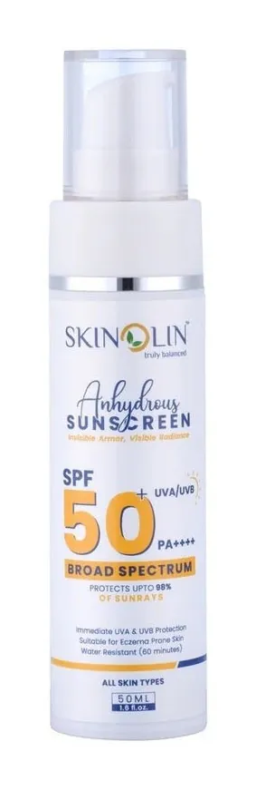
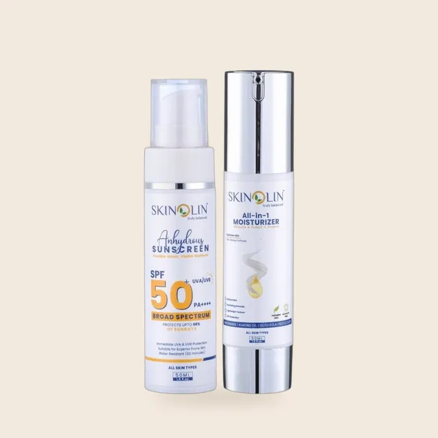

What Is Anhydrous Sunscreen? Water-Free SPF Explained

Anhydrous sunscreen meaning, in one line: a sunscreen made without water. "Anhydrous" simply means "without water", and on the ingredient list it means you will not find "Aqua" or "Water" at the top, where most sunscreens start.
The UV filters are held in oils, esters or silicones instead, which gives an anhydrous sunscreen a different feel from a lotion: usually smoother, drier and more serum-like. Skinolin's Anhydrous Sunscreen SPF 50 PA++++ is made this way.
This guide explains what anhydrous means, how to spot an anhydrous sunscreen on the label, the benefits people look for, who it suits, and how it compares with the sunscreen you may already use.
What does anhydrous mean?
Anhydrous comes from the Greek for "without water". In a skin care product it means the formula contains no added water. Most creams, lotions and gels are mostly water, with oils and active ingredients mixed in. An anhydrous product skips the water and is built from oils, butters, waxes, esters, silicones or other water-free bases. In sunscreen, that base carries the UV filters instead of water.
You may also see these formats called an anhydrous sunscreen gel, a waterless sunscreen or an oil based sunscreen. They are variations on the same idea.

How to tell if a sunscreen is anhydrous
- Check the ingredient list. In most products the first ingredient is "Aqua" or "Water". If it is missing, the formula may be anhydrous.
- Check the description. Brands that make water-free sunscreens usually say "anhydrous" or "waterless" on the pack or page.
- Feel it. Anhydrous sunscreens often feel smooth and slightly slippery as they go on, then settle into a dry or matte finish.
Products in this guide


Anhydrous sunscreen benefits: why some people prefer one
- The UV filters sit in an even base. Many modern UV filters dissolve in oils, so a water-free base can hold them evenly across the product.
- A light, serum-like feel. Many people find them comfortable in heat and humidity, because the sunscreen does not feel heavy or sticky.
- Little or no white cast. If you are looking for a no white cast sunscreen, a water-free base is a good place to start. Well-formulated anhydrous sunscreens with modern filters tend to blend in without a pale film, which matters on medium to deep Indian skin tones.
- A matte or dry-touch finish, which helps under makeup and on oily skin.
- Often a nourishing base. Skinolin's formula uses carrot seed, sweet almond and argan oils, which soften the skin while it is protected.
None of this makes one type of sunscreen better for everyone. A sunscreen protects only if you apply enough, apply it evenly and reapply it. The best sunscreen is the one you will actually wear every day. Our sunscreen guide explains SPF and PA ratings.
Who suits an anhydrous sunscreen?
- Oily and combination skin that dislikes a greasy film: look for a matte finish.
- Anyone who wants no white cast on medium to deep skin tones.
- People in hot, humid places who want a sunscreen that feels light and settles quickly.
- People who wear makeup and want a smooth base under it.
If your skin is very dry, add a moisturizer underneath first, and check how the sunscreen feels on your skin before you buy a big bottle. If your skin is very sensitive, patch test.

Anhydrous vs the sunscreen you use now
| Typical water-based sunscreen | Anhydrous sunscreen | |
|---|---|---|
| First ingredient | Water (Aqua) | An oil, ester, silicone or similar |
| Texture | Fluid lotion or cream | Silky gel or serum-like |
| Finish | Dewy to natural | Often dry-touch or matte |
| Under makeup | Easy to layer | Let it settle, then apply makeup |
For a fuller comparison for Indian weather, read anhydrous vs water-based sunscreen.
Skinolin's Anhydrous Sunscreen SPF 50 PA++++
The Anhydrous Sunscreen SPF 50 PA++++ is a waterless, broad-spectrum sunscreen with a fast-absorbing, matte finish and no white cast. It combines modern UV filters with nourishing carrot seed, sweet almond and argan oils. Apply it to the face and neck before sun exposure as the product label directs, and reapply every two hours outdoors. How to apply and reapply it is covered in how to apply and reapply anhydrous sunscreen.
It pairs well with the rest of the range: the Niacinamide Daily Cleanser to take it off, and the All-in-1 Moisturiser with SPF 30 for days spent mostly indoors.
Frequently asked questions
What does anhydrous mean in sunscreen?
It means a sunscreen made without added water. The ingredient list does not start with "Aqua" or "Water".
Is anhydrous sunscreen better than normal sunscreen?
Not automatically. It is a different type with a different feel. A sunscreen works when you use enough and reapply, whatever its base. Choose the one you will wear.
Is anhydrous sunscreen good for oily skin?
It can be, if the finish is matte or dry-touch, as with Skinolin's SPF 50. Check how it feels on your own skin.
Does anhydrous sunscreen leave a white cast?
Sunscreens made with modern filters in a water-free base generally do not. Skinolin's SPF 50 is formulated with no white cast.
Is anhydrous sunscreen water resistant?
A water-free base does not make a sunscreen water resistant by itself. Only products tested and labeled water resistant make that claim, and you should reapply after sweating or swimming.
Does water-free mean preservative-free?
Not necessarily. Water-free formulas are less hospitable to microbes, but a product can still contain preservatives. Check the ingredient list.
Can I use anhydrous sunscreen under makeup?
Yes. Apply it after your moisturizer, wait a few minutes for it to settle, then apply makeup.
What SPF should an anhydrous sunscreen be?
Choose SPF 30 or higher, with a PA rating of PA+++ or PA++++ for UVA protection. SPF 50 gives more margin if you are outdoors for long periods or tend to apply less than the recommended amount.
Sources and further reading
Further reading from dermatology organizations and published research:
- American Academy of Dermatology: How to decode a sunscreen label
- American Academy of Dermatology: How to apply sunscreen
- Prettypaul D et al. Microscopic evaluation of polymeric film properties of anhydrous sunscreen compositions and their relation to absorption and water resistance. J Cosmet Sci, 2012 (PubMed)
Shop this routine
